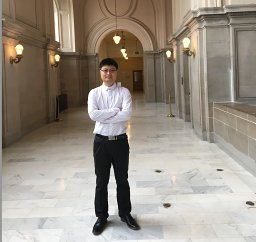

|
Keqiang He (贺可强）
|
 |
上海交通大学计算机学院
闵行区东川路800号
上海市 200240, 中国
E-mail: kqhe [@] cs [DOT] sjtu [DOT] edu [DOT] cn
|
About me
上海交通大学计算机学院先进网络研究所。我的研究方向为计算机网络和系统，包括云数据中心、智算中心网络以及机器学习系统等。
我于2017年8月博士毕业于威斯康星大学麦迪逊分校，获得计算机科学博士学位，导师为Aditya Akella教授。
博士期间获得Lawrence H. Landweber NCR Wisconsin Distinguished Graduate Fellowship。
硕士毕业于清华大学计算机科学与技术系（导师为刘斌教授）。本科毕业于西安电子科技大学（排名1/303）。
对计算机网络、计算机系统以及机器学习系统等方向感兴趣的本科生、硕士生和博士生，欢迎随时与我联系交流研究机会！
Recent News
[2025.07] Paper SGLB accepted by ACM SIGCOMM 2025.
[2025.04] Paper FlowGram accepted by IEEE IWQoS 2025.
[2025.04] I will serve as a TPC member for ACM CoNEXT CNC 2025.
[2025.04] I will serve as a TPC member for ACM SIGCOMM NAIC 2025.
[2025.01] Two papers accepted by USENIX EuroSys 2025.
[2025.01] I will serve as a TPC member for USENIX NSDI 2026.
Research Interests
|